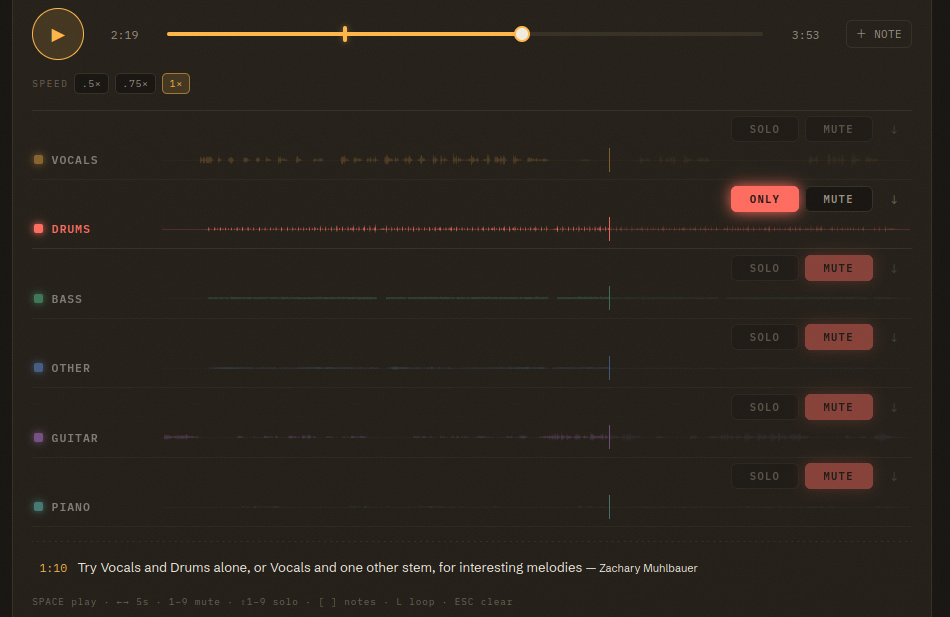

The Mixer
Use the mixer to hear a musical part alone, compare it with another part, or repeat a passage until you can describe what changed.

Transport
Press the round play button or the space bar to play and pause the stems together. Drag the scrub handle or click a waveform to move to another passage. The left and right arrow keys move the playhead five seconds at a time.
The speed controls offer 0.5×, 0.75×, and 1× playback. The mixer preserves pitch when you slow the recording, so a fast bass line stays in the same key. Try a slower speed when you need to count a rhythm or follow a short phrase.
Solo and Mute
Mute silences one stem. Solo silences the other stems and changes the chosen stem's button to Only. You can solo several stems to hear a subset of the mix, such as vocals with drums. Compare that pair with the full recording before describing how the parts relate.
Your mix stays local to your browser during independent listening. In a live session, the instructor sends an instrument focus to followers. Each follower's mute switches still apply to that shared focus.
Loop
Press L to set a loop around the current region. The mixer repeats the passage so you can follow a riff, cadence, or drum fill. Press Esc to clear the loop and any solo.
Keyboard Shortcuts
| Key | Action |
|---|---|
| Space | Play or pause |
| ← → | Back or forward five seconds |
| 1–9 | Mute or unmute stem 1–9, top to bottom |
| Shift+1–9 | Solo stem 1–9 |
| [ ] | Previous or next note |
| L | Set a loop |
| Esc | Clear the loop and any solo |
The shortcut legend also appears below the notes in an expanded session. Focus the mixer before using a shortcut; the keys belong to that recording and leave text fields available for typing.
Stem Labels and Colors
| Stem | What the model places here |
|---|---|
| Vocals | Lead and backing voices. Spoken word and crowd noise usually land here too. |
| Drums | Drum kit and most percussion. |
| Bass | Electric and upright bass, low synth bass. |
| Other | Horns, strings, organ, synths, and other sounds the model leaves outside the named stems. |
| Guitar | Six-stem only. Acoustic and electric guitar. |
| Piano | Six-stem only. Piano and some keyboard parts. |
In a two-stem split, Instrumental contains the accompaniment. A course can rename labels so students share a vocabulary for the recording. For example, a class might call an Other stem “fiddle” after listening to its contents. Class Workspace explains the course settings.
Check the Split Against the Recording
A stem can contain sounds that its label does not name. Reverb and room sound may remain in Other, where brass and reeds also share a track. On an older recording with surface noise or a narrow mono mix, the vocal stem may carry hiss while the drum stem contains little sound.
A six-stem split can distribute a piano chord across Piano and Other, or leave some guitar in another stem. Listen to the full recording as well as the isolated part before deciding which instrument you hear. Sample Activities includes exercises that ask students to check a description against the stems and explain where the split makes listening harder.